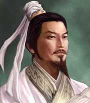

名称：
集数：
播出时间：
百家讲坛 向诸葛亮借智慧
8
2011年01月14日
在《三国演义》中，诸葛亮是智慧的化身，用自己的智慧书写了人间传奇。隆中对策、舌战群儒、草船借箭、七擒孟获，一个个经典之作，犹如苍穹中的一颗颗璀璨的明珠，成就了他无人企及的智慧传奇。那么，孔明先生的智慧究竟从何而来？《三国演义》和《三国志》的记载有什么不同，千百年后的今天，他的卓越智慧又能给今天的我们带来哪些启迪和帮助呢？主讲人赵玉平管理学和心理学角度出发，运用人力资源管理和组织行为学的知识，解读诸葛亮的一生，对三顾茅庐、舌战群儒、赤壁大战、空城计、斩马谡、六出祁山等大事件都有精辟的分析，从一个崭新的角度观察历史人物和历史事件，既讲故事也分析规律，并与当今现实生活相结合，古为今用，总结出能在现实生活中运用的规律和技巧。